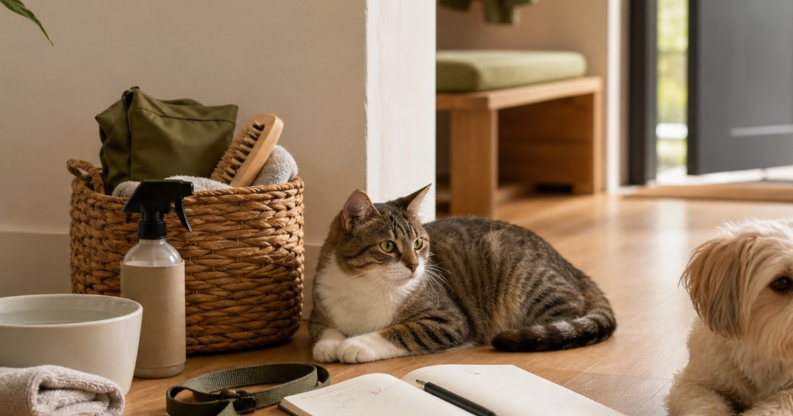

Elite Fashion｜GenePet.tw 推薦：毛孩日常觀察表，先看食慾、清潔與外出反應
與其急著補一堆寵物保健名目，不如先把食慾、飲水、清潔與外出反應整理成兩週觀察表，再回 GenePet.tw 挑真正高頻會用的用品。

很多毛孩家庭一看到日常狀態有點變化，就很容易直接跳到新品、保健名目或特殊用品；但真正穩妥的順序，往往是先把食慾、飲水、排泄、清潔與外出反應記下來。GenePet.tw 這類店家更適合放在第二步來看：先有觀察表，再回商品頁比對標示、尺寸、材質與適用限制，才比較知道什麼會被真正用進生活裡。
先做兩週觀察，不先追求神奇答案
寵物用品最容易讓人失去節奏的，不是選擇太少，而是選擇太多。食慾忽然變快或變慢、飲水量有些變化、散步回家比較躁動、清潔次數變高，很多家庭第一反應是立刻找一個看起來很完整的解法。但對多數日常情境來說，更成熟的做法是先做兩週觀察，把變化放回時間軸裡看。
GenePet.tw 值得看的地方，不是讓你一次買滿，而是能作為觀察後回頭比對的用品入口。當你已經知道毛孩在哪個時段吃得最穩、出門後哪個動作最容易卡住、回家後清潔是否常常拖延，店頁上的品項才有比較基準；否則再多用品都只是把焦慮換成購物車。
Elite Fashion 編輯團隊的具體判斷是：先做兩週觀察，再補一輪用品，比看到單一狀態就急著下單更可靠。這也讓 GenePet.tw 能被放回同一個生活問題裡比較，而不是只看某個看起來很厲害的名稱。
- 先記錄哪一個時段的食慾與飲水最穩定。
- 先確認外出前、回家後與睡前各會用到哪些用品。
- 沒有連續記錄前，不急著把所有變化都交給新品處理。
食慾、飲水、排泄要一起看，不能拆開判斷
很多人會只記得今天吃得多不多，卻忘了飲水、排泄與活動量其實是同一組訊號。若只單看一餐，常常會把偶發波動誤判成長期問題；但若你把早餐、晚餐、喝水次數、外出後反應與排泄節奏放在同一張表上，很多事情會變得更清楚。
這也是為什麼本文不把 GenePet.tw 寫成單一品項推薦，而是把它放在日常照顧與用品比對的後半段。當你知道毛孩比較常在哪個場景挑食、哪個時間回家最需要擦拭、哪種零食或用品只是短暫新鮮感，你回商品頁時會更知道自己要看的是保存方式、份量、材質還是適用限制。
台灣家庭尤其容易忽略濕氣與氣溫對日常節奏的影響。梅雨季、午後雷陣雨、夏天長時間開冷氣或短時間外出曝曬，都可能讓飲水、清潔與外出收尾變得不同。先看整體節奏，再看用品，會比先買一堆名目更貼近生活。
- 記錄至少包含時間、份量、反應與回收整理動作。
- 同一個用品若連續兩週都沒有高頻使用，就先不要補大容量。
- 任何涉及飲食、特殊身體狀況或異常反應的判斷，都要回到商品標示與專業意見。
Elite 嚴選
清潔與外出用品，其實最能看出日常摩擦在哪裡
真正讓寵物家庭失控的，往往不是主食本身，而是回家後那五分鐘。牽繩放哪裡、擦腳毛巾有沒有晾乾、清潔用品能不能一手拿到、外出包是不是每次都要重新翻，這些細節比任何漂亮包裝都更直接決定你下一次會不會覺得麻煩。
GenePet.tw 若要被放進實際採買清單，最適合先看這一層。因為清潔與外出用品只要位置對了，食物、零食、玩具與備品管理都會一起變順；反過來說，若你沒有把外出回家的收尾動線安排好，再補再多用品也只是增加櫃子裡的物件。
編輯部會把清潔與外出用品排在很前面，原因很簡單：它們最容易在生活裡被反覆驗證。若一件物品真的有用，你一週內就會知道它是不是高頻；若它只是看起來完整，你也會很快發現它只是一直待在架上。
- 外出包要固定在玄關或車上，不要每次出門前重組。
- 清潔用品和食品分區，避免回家後同時翻兩個櫃子。
- 擦拭布、濕巾、垃圾袋與備用牽繩要有明確歸位點。
台灣小宅與潮濕氣候下，收尾比囤貨更重要
台灣多數家庭不是沒有用品，而是沒有足夠空間讓用品待在正確位置。食品放得太靠近清潔區、濕毛巾來不及晾、玩具和外出包混在一起、備品塞進高櫃後就被忘記，這些都會讓下一次使用變得更麻煩。與其追求完整，不如先讓收尾動作穩定。
如果家裡坪數不大，最值得做的不是增加很多收納盒，而是把用品分成三層：每天會拿、每週會用、只是備用。每天會拿的留在視線高度；每週會用的留在容易伸手處；備用品集中一盒並標記日期。這樣你才知道真正缺的是什麼，而不是因為忘記放哪裡就重買一次。
Elite Fashion 編輯團隊的另一個判斷是：好用的寵物用品，不只在使用時順手，也要在回收、晾乾、補貨與記錄時不製造麻煩。這也是本文把 GenePet.tw 放在『生活摩擦整理』脈絡裡，而不是把它寫成萬用答案的原因。
- 潮濕季節先看保存條件，不要因為優惠就買過量。
- 外出回家的第一個動作要固定，才能判斷哪些用品真的有必要。
- 多人共養家庭最好用同一張補貨與觀察小表，不靠口頭提醒。
編輯判斷：先把兩個高頻情境做穩，再談其他延伸用品
如果你現在要從零開始整理，我會建議先只抓兩個高頻情境。第一個是用餐與飲水情境：碗、水、保存、清潔與收尾。第二個是外出與回家情境：牽繩、毛巾、擦拭、收納與補貨。這兩個情境一穩，很多額外焦慮都會自然下降，因為你會知道每天真正反覆發生的是什麼。
很多家庭一開始最容易犯的錯，是把高頻問題和低頻問題放在同一個優先順序裡。偶爾才需要的品項，和每天一定會碰到的用品，應該分成兩張清單。GenePet.tw 這類店頁若要看得有效率，也應該先按高頻與低頻切開，不要一次把所有頁面都逛完。
這一段也是本文最核心的編輯判斷。先做兩週觀察，再只補高頻情境裡缺的那一兩樣，會比直接購入整套看起來更完整的用品更適合台灣忙碌家庭。因為真正留下來的，不是最華麗的方案，而是你下週還願意繼續照著用的方案。
- 高頻情境先補一到兩樣，不一次補滿。
- 每次補貨前先看兩週記錄，而不是先看促銷頁面。
- 若用品不能降低日常摩擦，就算好看也先放回候選名單。
GenePet.tw 值得怎麼看，也要知道什麼情況先暫緩
GenePet.tw 比較適合的讀法，是把它當成日常照護與用品整理的入口，而不是單一答案庫。你可以回店頁交叉看食品、零食、外出、清潔或其他照顧用品的標示與限制，但每一次比較都要回到同一個問題：這件東西要解決的是哪一段日常摩擦？
若你目前連觀察表都還沒開始、家裡的高頻動線還很亂、或毛孩的狀態已經超出一般用品整理能處理的範圍，那就先不要把壓力放在購物上。先做記錄、先確認標示、先諮詢專業意見，再決定要不要補貨，通常會比邊焦慮邊買更有幫助。
本文只提供保守的生活整理順序，不宣稱任何健康、營養、行為或照護效果。商品名稱、價格、活動、庫存、規格與適用限制都可能變動，請以下單前的 momo 商品頁與專業意見為準。
- 用品頁面可以看，但判斷順序要留在自己手上。
- 涉及異常反應、飲食限制或特殊照護時，先回到專業建議。
- 最成熟的採買，不是買最多，而是知道什麼先不要買。
同主題品牌參考
FAQ
毛孩今天吃得少一點，就要立刻買特殊保健用品嗎？
不建議直接跳到購買。先把食慾、飲水、排泄、活動量與外出反應放在同一張兩週觀察表裡看；若變化持續或超出一般日常範圍，應依商品標示並尋求合格專業意見。
GenePet.tw 這類店家要先看哪些資訊？
先看品項的用途、標示、尺寸、材質、保存方式、清潔限制與退換規則，再判斷它是不是剛好能解決你目前的高頻情境。沒有觀察表時，不要只靠包裝語言下決定。
寵物外出包最少應該固定哪些東西？
通常至少要有牽繩、水與水碗、擦拭用品、垃圾袋或回收用品，以及一條可替換的小毛巾。重點不是塞滿，而是回家後能快速補齊並歸位。
下一步建議
如果你想把毛孩照顧用品整理得更穩，先做兩週觀察，再回 GenePet.tw 只看高頻情境真正缺的那一兩樣，通常比一次補滿更實際。
重要警語
本文為一般寵物用品整理與生活情境觀察參考，不構成獸醫、營養、行為或照護建議；寵物食品與用品請依商品標示、毛孩實際狀況與合格專業意見判斷。
本文含品牌／商品導購連結；若你透過部分商品連結前往選購，Elite Fashion 可能取得合作收益。本文仍以編輯判斷與使用情境整理為主，價格、規格、活動與庫存請以商品頁公告為準。